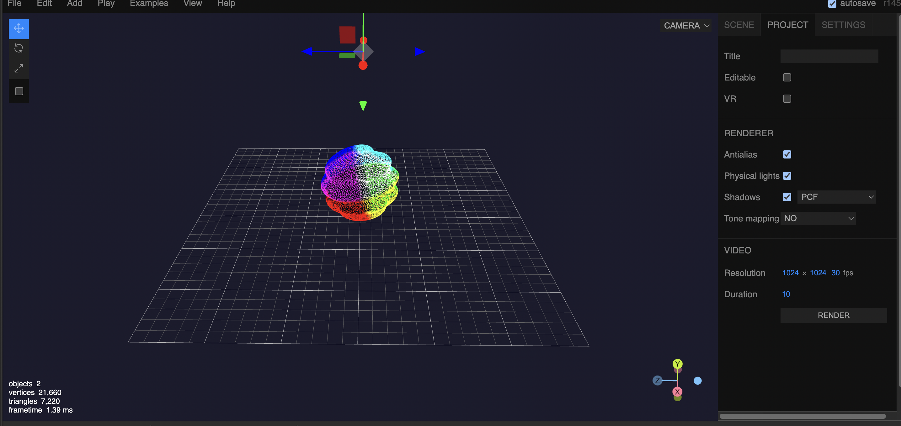

Currently I have been working a lot in a three-dimensional space and I would like users to interact with my artwork. Either changing the colors, manipulating the structure of the model, or even giving them the opportunity to download the glb file and allowing them to do whatever they want to do it with it. I also think it would be awesome to display different 3d objects as a gallery setting and letting users click on descriptor of each item
Three.js Example for Idea 1
I am not to familiar with sound.js and would like to explore more with it by creating code that allows users to make music or play music. I know creating different arrays and classes will need to be used for music plugins and assets for this to work. I think going with a similar grid setup display like in the link is what i would do. applying different colors and maybe even textures to grid would add a better visual for the websites page as well.
Sound.js Example for Idea 2